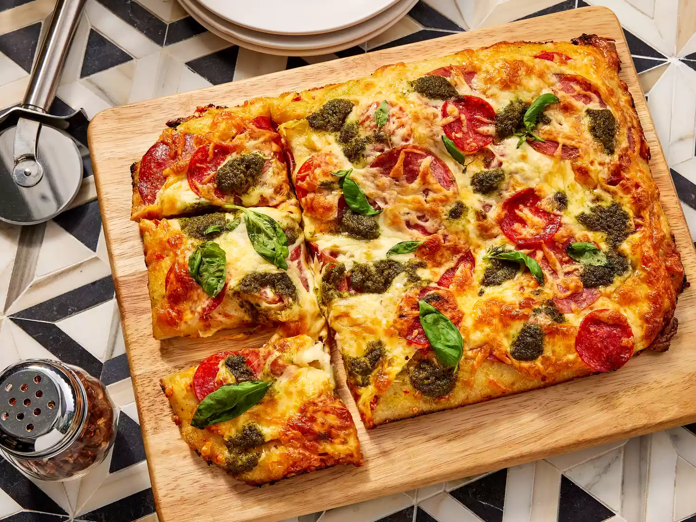

Pan Pizza
Home

Description
Pan Pizza is an easy-to-make style of pizza cooked in a baking pan or cast iron skillet.
They are popular for home cooks because of how quck and easy this recepi is. This particlar
recipe is a take on a pan pizza that features garlic and hot pepper spreads rather than the
usual tomato sauce. Paired with cured meats, cheese, and a golden crust, it delivers on all the
flavors promised.
Ingredients
- Fresh Pizza Dough
- Trader Joe's Garlic Spread Dip
- Trader Joe's Italian Bomba Hot Pepper Sauce
- Cheeses
- Meats
- Trader Joe's Pesto Genovese
- Finishes
Steps
- Gather all ingredients.
- Remove pizza dough from refrigerator 20 minutes before making pizza and prehead oven to 450 degrees F (230 degrees C).
- Spray a metal 9x13 inch baking pan with cooking spray. Stretch the dough so that it reaches every corner. If the dough is hard to stretch let it rest for 10 minutes while placing a towel over it.
- Spread garlic dip evenly over dough with a spoon or spatula, and dollop with Bomba Hot Pepper Sauce, and spread evenly.
- Place 1/2 of the salami and 1/2 of the pepperoni over the sauces, sprinke with 3/4 cup mozzerella, and then top with remaining salami and pepperoni followed by sprinkling the rrst of the mozzerella cheese.
- With a spoon dollop pesto, about 1/2 tsp at a time over the pizza.
- Bake in preheated oven until dough has puffed up and has a golden brown color all over, and the cheese is melted. This shoud take about 15-20 min rotating the pan back to front halfway through.
- Use a large spatula to remove from the oven and carfully transfer to a cutting board. Top it off with some basil, slice, and serve.